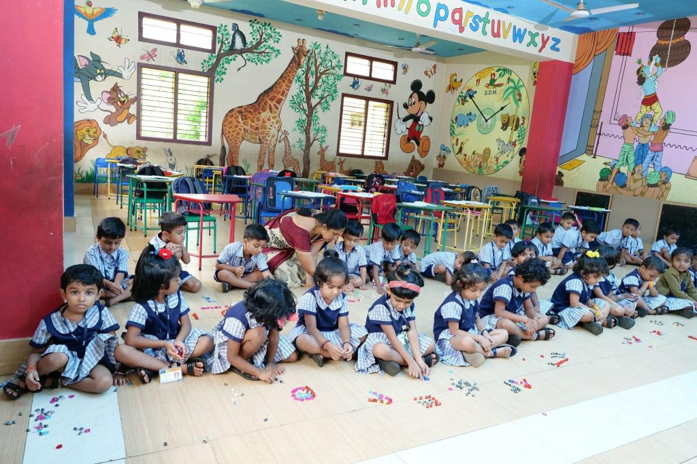
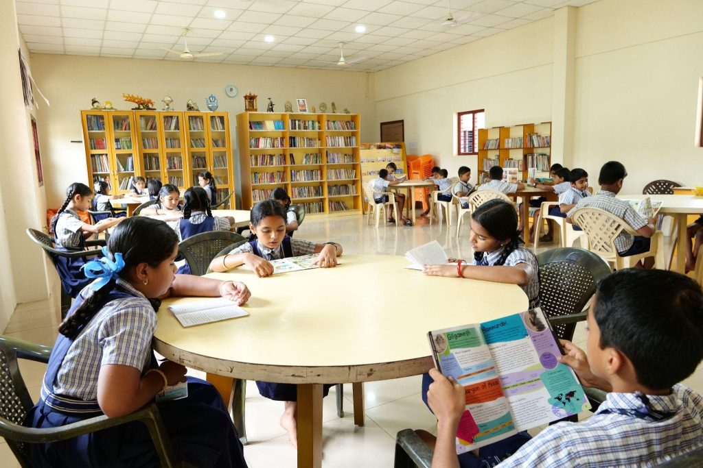
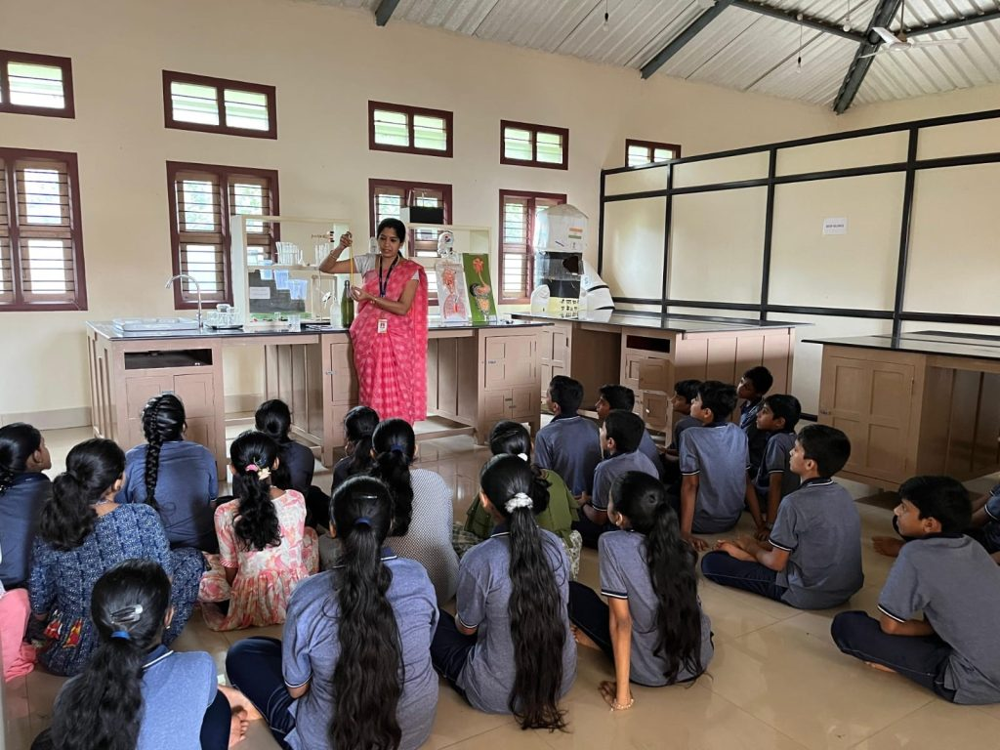
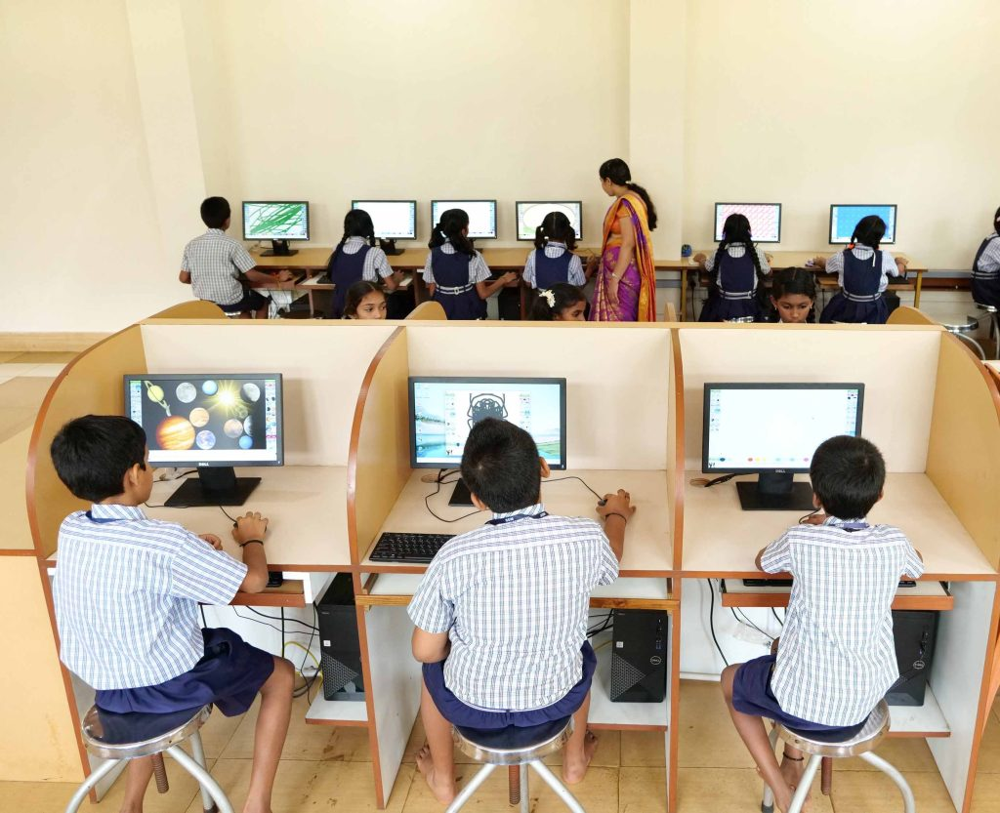
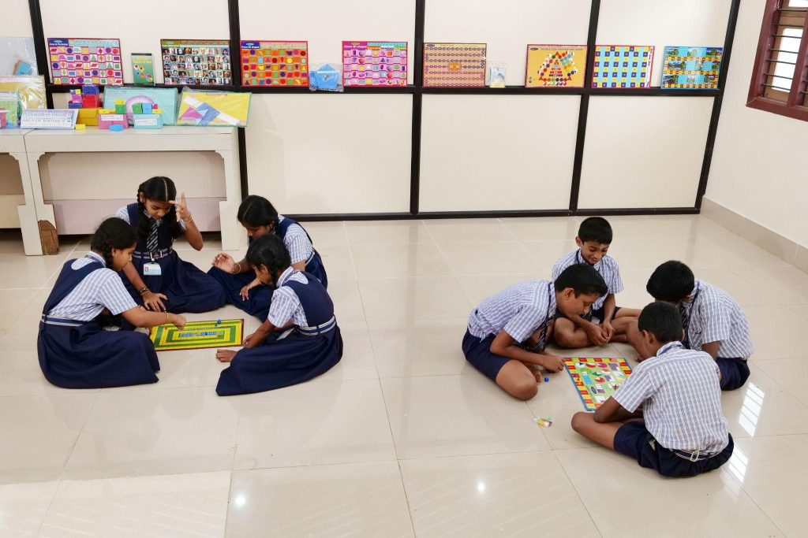
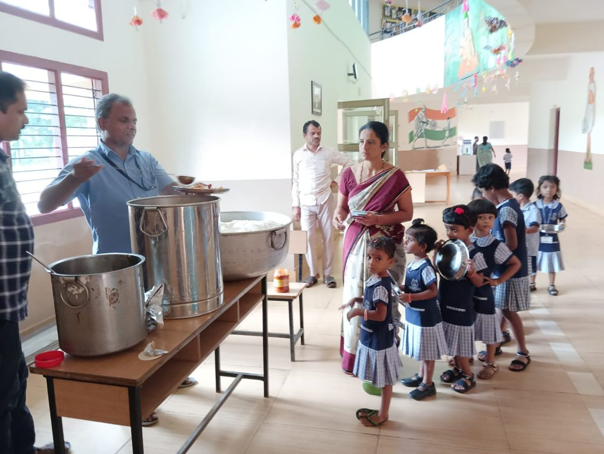
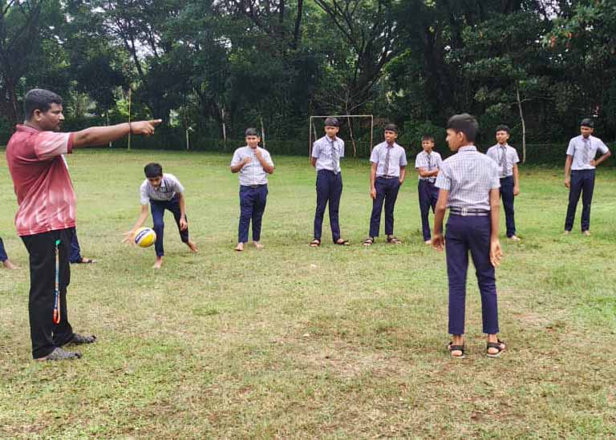
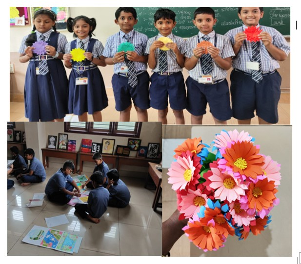
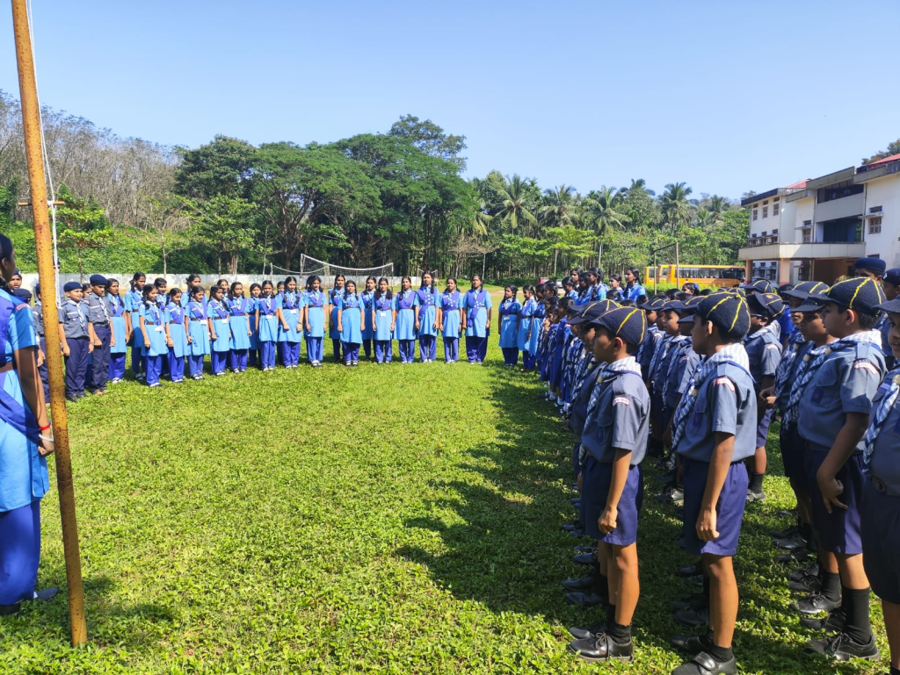
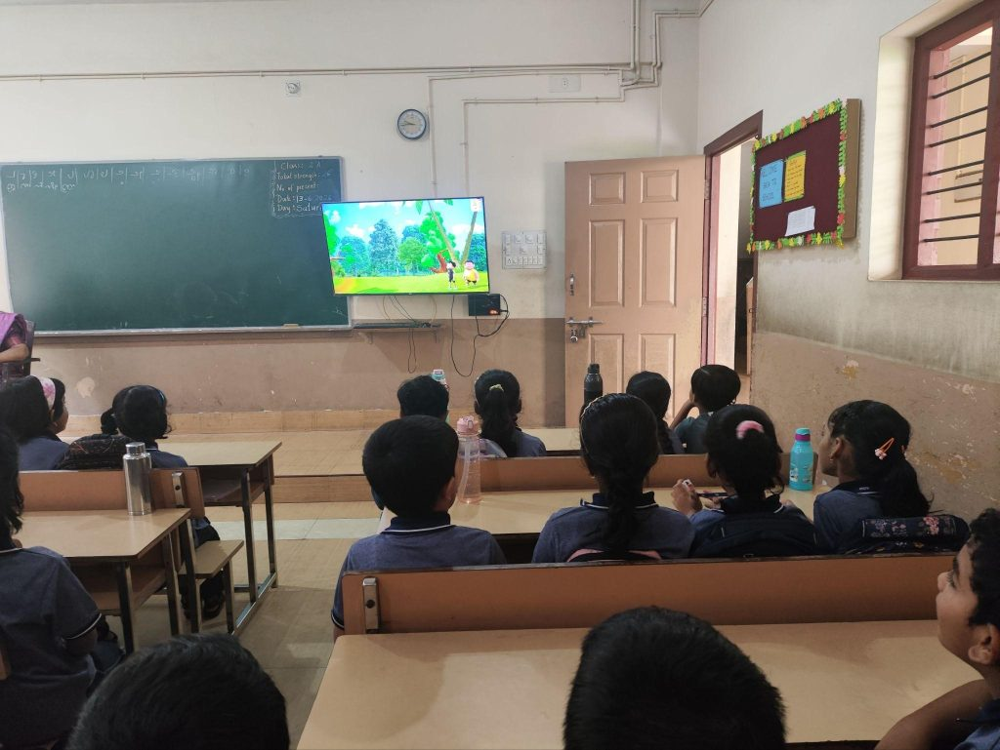

SDM Secondary School
Spaces that inspire.
Experiences that stay.
Explore the classrooms, laboratories and everyday facilities that support learning at SDM.

01 / Kindergarten
A gentle start to learning
Activities help young children build social skills, creativity, confidence and an interest in learning.

02 / Library
A world waiting to be opened
A collection of purchased and donated books encourages students to read widely, explore new interests and discover different perspectives.

03 / Science laboratory
Understand it. Try it. Discover it.
Physics, chemistry and biology activities bring concepts to life through observation, experiments and practical learning.

04 / Computer laboratory
Digital skills, real possibilities
Computer learning progresses from creative tools and Scratch to programming and web technologies, with access to internet resources.

05 / Mathematics laboratory
Making ideas tangible
Models, puzzles and practical activities help students explore mathematical ideas and strengthen problem-solving skills.

06 / School meals
Care throughout the school day
The midday meal programme supports students with balanced food prepared with attention to hygiene.

07 / Physical education
Move with purpose
Sport, yoga and games support physical fitness, teamwork and discipline, with opportunities to participate in competitions.

08 / Art education
Make room for imagination
Drawing, painting and craft help students develop creative skills and find their own ways to express ideas.

09 / Scouts & Guides
Learning to lead and serve
Cubs, Bulbuls, Scouts and Guides bring practical skills, cooperation and service into school life.

10 / Smart classrooms
New ways to understand
Internet-connected Android TVs support lessons with visual resources, presentations and educational content.
Getting to school
A supported
daily journey.
School transport
The school provides buses with GPS tracking and first-aid boxes. Contact the office to confirm route coverage, pickup points, availability and fees for your area.
Ask about transportLet’s take the next step